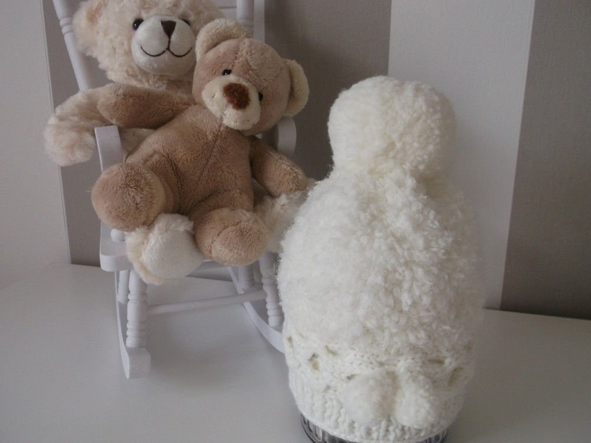
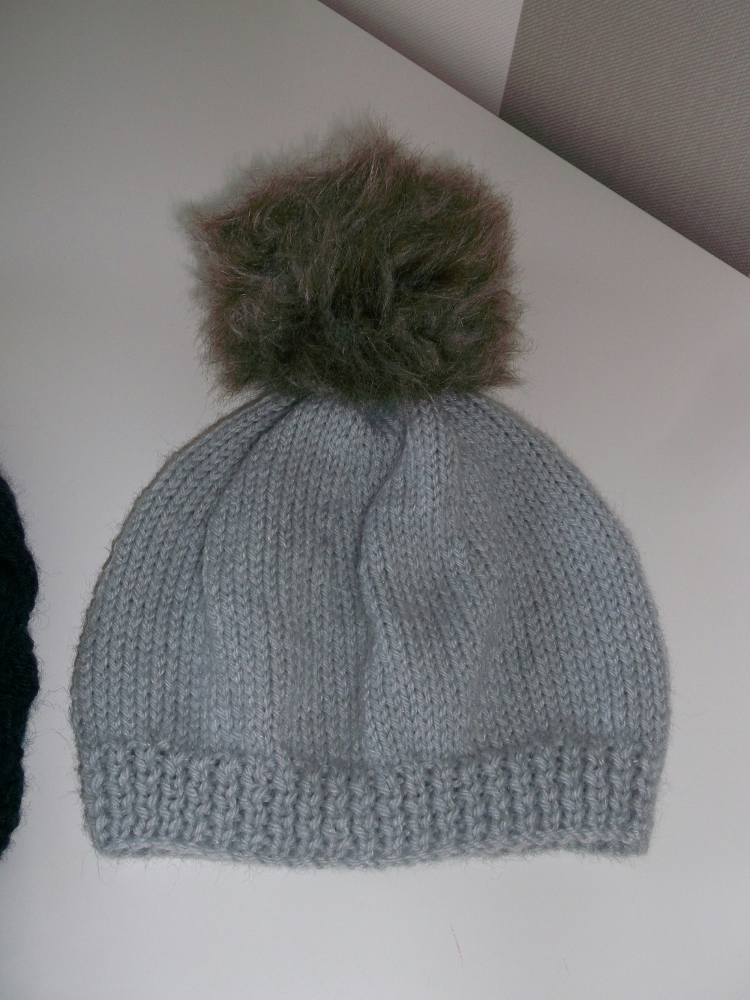
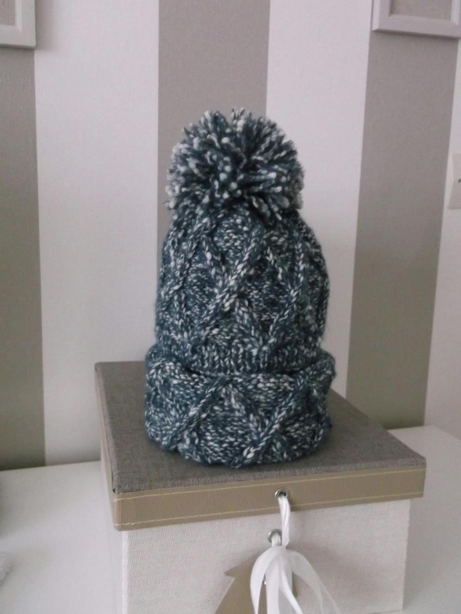
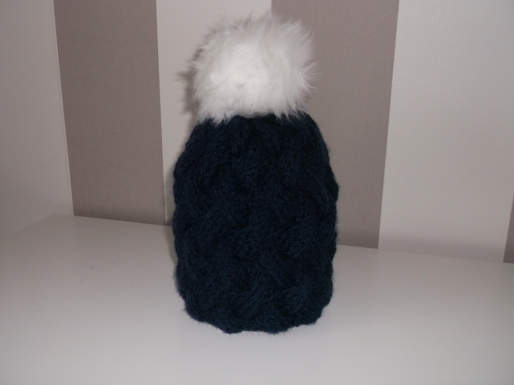
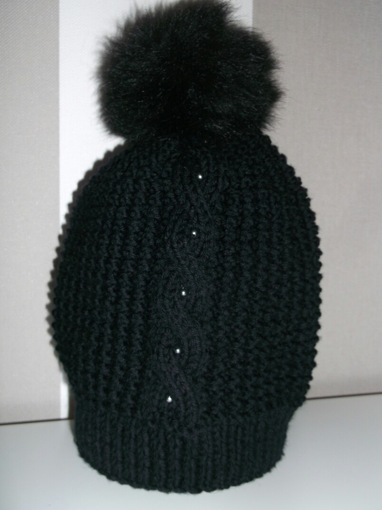
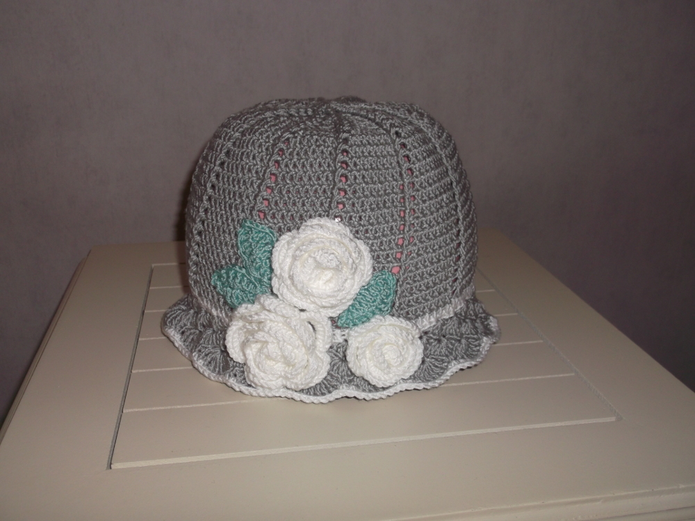
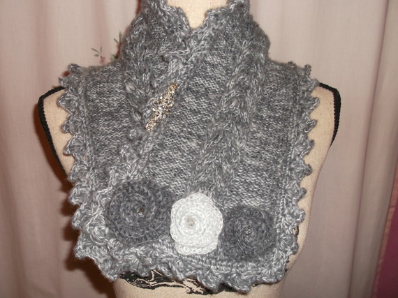
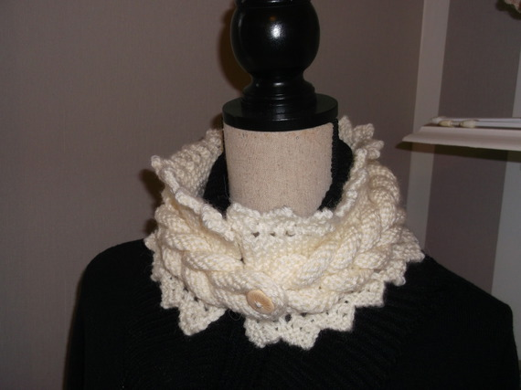
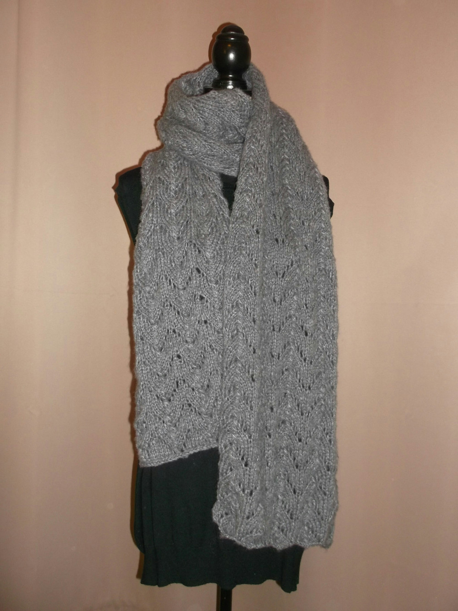
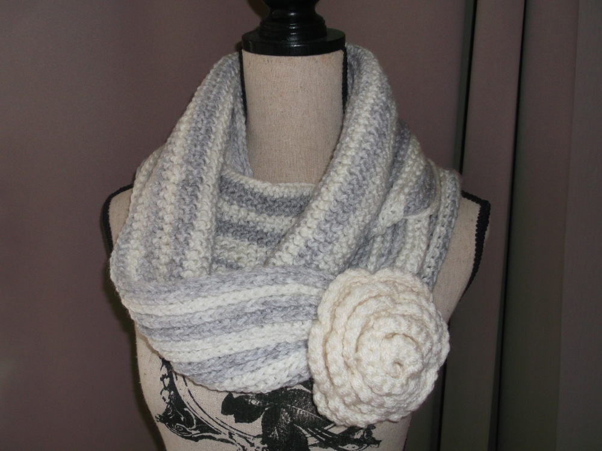

Galerie Bonnets et Echarpes

Bonnet Blanc à Pompon
- Bonnet fillette tricoté en laine mousse blanche
- Point de Jersey
- Côtes 1/1 confectionné en laine acrylique
- Motifs torsadé horizontalement en bordure supérieure de côte
- Pompon en laine

Bonnet Gris à Pompon
- Bonnet naissance tricoté en laine acrylique
- Point de jersey
- Côtes 1/1 en bordure
- Pompon en imitation fourrure marron

Ensemble Gris Chiné
- Ensemble bonnet et snood pour bébé tricoté en laine acrylique chiné
- Point fantaisie
- Côte 1/1
- Motif torsadé d'inspiration irlandaise
- Pompon lâche en laine

Bonnet Bleu Marine à Pompon Blanc
- Tricoté en laine acrylique
- Point vannerie
- Pompon blanc en imitation fourrure

Bonnet Noir à Pompon
- Bonnet pour petite fille tricoté en laine acrylique de couleur noire
- Point de sable
- Motif central en torsade orné de perles de rocaille
- Pompon blanc en imitation fourrure

Chapeau Gris à Fleurs
- Crocheté en laine acylique grise
- Les roses blanches ainsi que leurs feuilles sont également crochetés en laine acrylique
- Utilisation d'un point typé bride
- Bordure en écaille

Tour-de-Cou Gris
- Tricoté en laine alpaga gris chiné, très douce
- Motif central en torsade
- Contour en reliefs triangulaires en point de picot
- Trois roses réalisées au crochet viennent orner l'une des extrémités

Tour-de-Cou Ecru
- Petit tour de cou en laine acrylique
- S'ouvre et se ferme par le biais d'un petit bouton en bois naturel liant les extrémités
- Tricoté avec un motif central tressé fortement en relief
- Utilisation du point de dentelle pour le contour

Echarpe grise
- Longue écharpe tricoté en laine alpaga gris souris
- Motif fin et délicat par l'utilisation d'un point ajouré façon dentelle
- Envergure d'environ 2m
- Epaisseur de laine fine mais malgré tout très isolant du froid

Snood Rayé Gris et Blanc
- Tour-de-cou crocheté en laine acrylique gris chiné
- Point de bride
- Orné sur l'un de ses faces d'une rose volumineuse également crochetée